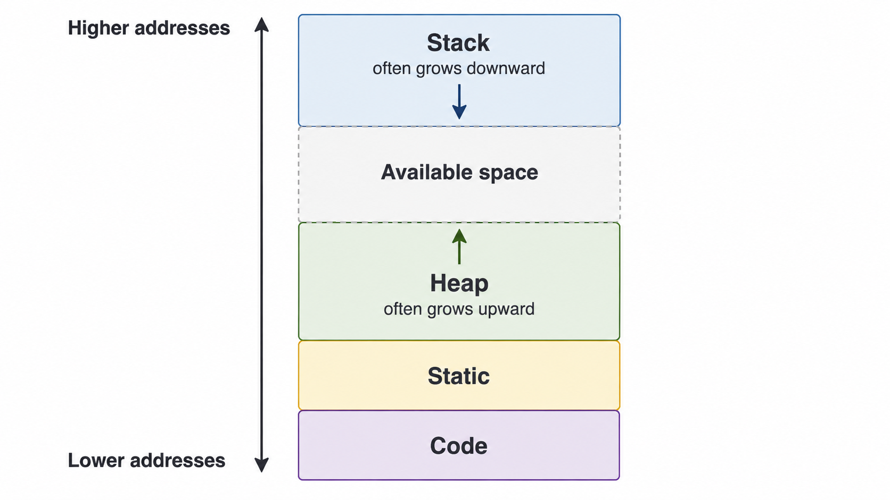
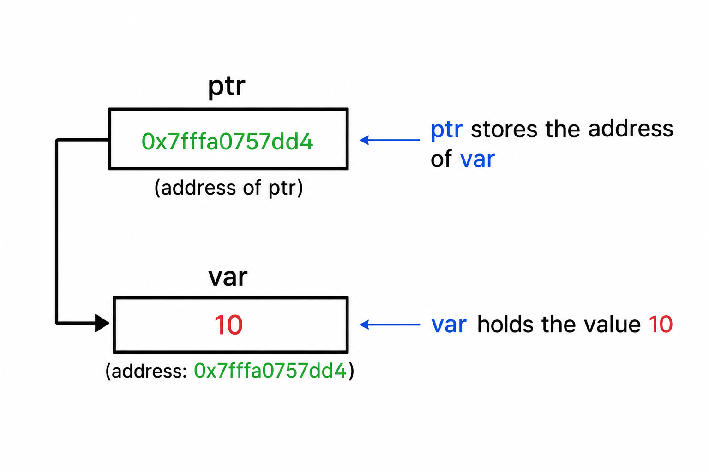
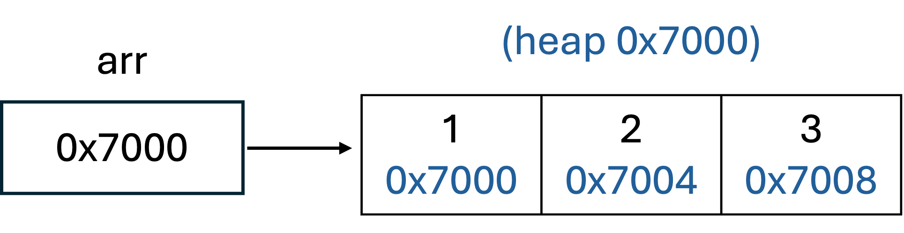
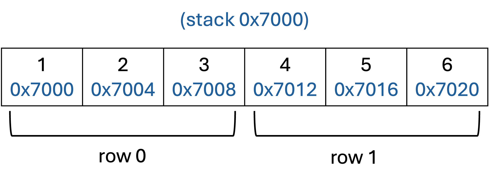
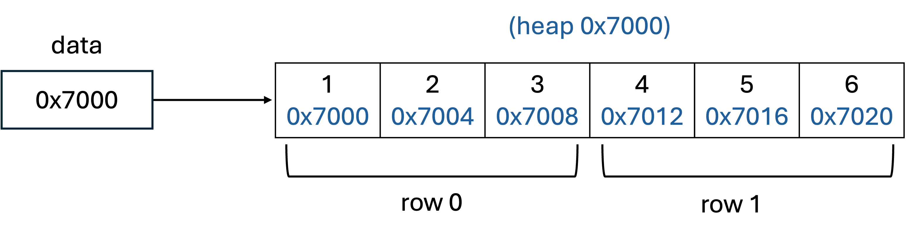
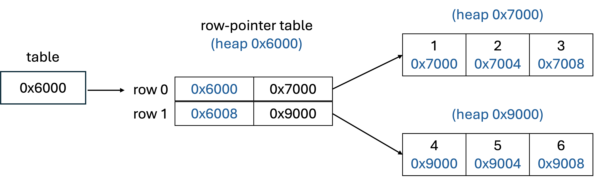

Memory Management
Liting Zhang
University of West Florida
Outline
Memory model: regions, stack, and lifetime
Pointers and references: addresses, dereference,
nullptrDynamic memory:
new,delete, and common bugsDynamic arrays: 1D arrays and 2D layouts
Resource-owning classes: destructor and shallow copy
Copy and move semantics: rule of 3 and rule of 5
Tool support: valgrind on Linux
Learning goals
After this lecture, you should be able to
Describe what lives in code, static, stack, and heap memory
Explain stack lifetime and heap lifetime
Use pointers safely: initialization, dereference rules, and
nullptrChoose between references and pointers for function parameters
Allocate and free single objects and arrays correctly
Explain leaks, double delete, use-after-free, and out-of-bounds access
Explain why shallow copy breaks resource-owning classes
Describe rule of 3 and rule of 5 at a high level
Memory regions
| Region | Usually contains | Lifetime |
|---|---|---|
| Code | Compiled program instructions | Entire program |
| Static | Global and static variables | Entire program |
| Stack | Local variables and function parameters | Function/block lifetime |
| Heap | Dynamically allocated objects and arrays | Until released |
Key idea: each region has different lifetime and management rules.
Example:
m03-mem-management/show_memo.cpp
Typical memory layout
Stack grows as functions call functions
Heap grows as dynamic memory is allocated
Exact layout depends on the OS and compiler

Stack memory and stack frames
Each function call creates one stack frame.
int squarePlusOne(int x) {
int y = x * x;
return y + 1;
}
int main() {
int result = squarePlusOne(4);
}Call pushes a new frame onto the stack
Return pops that frame off the stack
Stack is LIFO: last call returns first
Call stack while inside
squarePlusOne(4)
Frame: squarePlusOne
-
parameter:
x = 4 -
local variable:
y = 16 -
return location: back to
main
Frame: main
-
local variable:
result - waiting for function return value
Practice 1: stack overflow risk
Predict what can go wrong.
int f(int n) {
int big[1000000]{};
if (n <= 0) {return 0};
return big[0] + f(n - 1);
}
int main() {
return f(10);
}What is the risk?
What is one safer redesign?
Practice 1 Answer
Risk:
bigis allocated on the stack for every recursive call.This can overflow quickly because each call needs a large stack frame.
Safer redesign:
Move large memory to the heap once and reuse it
Or redesign to use a loop
Or reduce the stack frame size
Memory addresses
In RAM, memory is a large sequence of numbered locations.
Each location has an address
A variable has a value and an address
A pointer stores the address of another object
The object at that address is called the pointee
This is why pointer syntax always talks about addresses and dereferencing.
Pointer definition and basic syntax
int x = 10;
int* ptr = &x;
*ptr = 30;&xgets the address ofxptrstores that address*ptraccesses or changesxExample:
m03-mem-management/pointer.cpp

Dereference only when the pointer identifies a valid object.
nullptr
nullptr means this pointer currently points to no object.
Initialize a pointer to
nullptrwhen it has no target yetCheck before dereferencing when a pointer may be empty
Dereferencing
nullptris undefined behavior
int* p = nullptr;
if (p != nullptr) {
*p = 5;
}Practice 2: nullptr crash
What happens, and how do you fix it?
int main() {
int* p = nullptr;
*p = 5;
}Example:
m03-mem-management/nullptr-crash.cpp
Practice 2 Answer
Dereferencing
nullptris undefined behavior.A common result is a crash.
Fix: point to a real object before dereference.
int main() {
int x = 0;
int* p = &x;
*p = 5;
}Reference vs pointer
Reference &
Alias for another variable
Must bind to something at creation
Cannot be
nullptrCannot be reseated later
Pointer *
Stores an address
Can be
nullptrCan be reseated to point elsewhere
Requires dereference to access the pointed value
Two meanings of &
Address-of operator in an expression: type of
&xisint*Reference declaration in a variable declaration:
int&means reference toint
int x = 10;
// ref is another name for x
int& ref = x;
ref = 20; // changes x too
cout << x; // prints 20
int a = 10;
// ptr stores address of a
int* ptr = &a;
*ptr = 20; // changes a
cout << a; // prints 20
ptr = &x; // pointer can be reseatedFunction parameters: pointer vs reference
Pointer parameter
void swapByPointer(int* left, int* right) {
if (left == nullptr || right == nullptr) {
return;
}
int temporary = *left;
*left = *right;
*right = temporary;
}
swapByPointer(&a, &b);Call with addresses
Can receive
nullptrCheck before dereferencing
Reference parameter
void swapByReference(int& left, int& right) {
int temporary = left;
left = right;
right = temporary;
}
swapByReference(a, b);Call with variables
Must refer to valid objects
No dereference syntax
Example:
m03-mem-management/ref-vs-ptr-params.cpp
Practice 3: choose pointer or reference
You are writing a function that may modify an integer.
If the function must always receive a valid integer, what is a good choice?
If the function should allow no integer, what is a good choice?
Practice 3 Answer
Always valid integer: reference is a good choice.
Allow no integer: pointer is a good choice, because
nullptrcan represent no object.
Heap memory
Heap is used for dynamic memory
Dynamic memory is accessed through pointers
newallocates memory and returns an addressdeletereleases a single objectdelete[]releases an arrayThe programmer is responsible for matching allocation and cleanup
new and delete
// single object
MyClass* p = new MyClass();
delete p;
// array
int* a = new int[10];
delete[] a;newmust matchdeletenew[]must matchdelete[]deleteanddelete[]onnullptrdo nothing
Ownership and cleanup rules
A pointer is not the object; it stores the address of the object
The dynamic object lives on the heap until it is destroyed
Each allocation should be freed exactly once
After deleting a pointer, do not use it to access the old object
A common habit: set the pointer to
nullptrafter cleanup
Typical memory bugs
Memory leak: forget to delete
Double delete: delete the same block twice
Use after free: use a pointer after deleting it
Out of bounds: read or write past the allocated size
Dangling pointer: pointer still stores an address for an object that no longer exists
Practice 4: leak or not
Identify the bug.
int* makeArray(int n) {
int* a = new int[n];
for (int i = 0; i < n; i++) a[i] = i;
return a;
}
int main() {
int* p = makeArray(100);
// use p
return 0;
}What is wrong?
Show one fix.
Practice 4 Answer
What is wrong:
ppoints to dynamic memory that is never freed.
One fix:
int main() {
int* p = makeArray(100);
// use p
delete[] p;
p = nullptr;
return 0;
}Dynamic 1D array
A fixed array such as
int arr[10]has a compile-time sizeWhen size is known only at runtime, allocate the array on the heap
int n = 0;
cin >> n;
int* arr = new int[n];
for (int i = 0; i < n; i++){
arr[i] = i * i;
}
delete[] arr;
arr = nullptr;Example:
m03-mem-management/array-1D.cpp

Dynamic arrays of objects
For objects, one common pattern is one contiguous block.
size_t N = 3;
State* states = new State[N];
for (size_t i = 0; i < N; i++) {
states[i] = State("Alabama");
}
cout << states[0].getName() << "\n";
delete[] states;
states = nullptr;Fixed 2D array
Fixed-size 2D arrays are contiguous in row-major order
Works well when dimensions are known at compile time
Column count must be known for many function-parameter forms
const int ROWS = 2;
const int COLS = 3;
double mat[ROWS][COLS] = {
{1, 2, 3},
{4, 5, 6}
};
cout << mat[1][2] << "\n";
Dynamic 2D arrays: two layouts
One contiguous block:
- Allocate
rows * colsas one 1D array One block is contiguous overall and needs one
delete[]Pointer-to-pointer:
- Allocate row pointers, then allocate each row
Pointer-to-pointer is not contiguous overall and needs cleanup for each row
Example:
m03-mem-management/array-2D.cpp
Dynamic 2D: one contiguous block
Manual indexing: index = r * COLS + c
size_t ROWS = 2;
size_t COLS = 3;
double* data = new double[ROWS * COLS];
for (size_t r = 0; r < ROWS; r++) {
for (size_t c = 0; c < COLS; c++) {
data[r * COLS + c] = r * COLS + c + 1;
}
}
cout << data[1 * COLS + 2] << "\n";
delete[] data;
block = nullptr;
Dynamic 2D: pointer-to-pointer
size_t ROWS = 2;
size_t COLS = 3;
double** dyn = new double*[ROWS];
for (size_t r = 0; r < ROWS; r++) {
dyn[r] = new double[COLS];
for (size_t c = 0; c < COLS; c++) {
dyn[r][c] = r * COLS + c + 1;
}
}
cout << dyn[1][2] << "\n";
for (size_t r = 0; r < ROWS; r++) {
delete[] dyn[r];
}
delete[] dyn;
dyn = nullptr;
Practice 5: missing cleanup
What is missing?
double** make2D(size_t rows, size_t cols) {
double** a = new double*[rows];
for (size_t r = 0; r < rows; r++) {
a[r] = new double[cols];
}
return a;
}
int main() {
double** m = make2D(3, 4);
// use m
delete[] m;
}What bug occurs?
How do you fix the cleanup?
Practice 5 Answer
Bug: each row allocation leaks because only the outer pointer array is freed.
Fix: delete each row first, then delete the pointer table.
int main() {
double** m = make2D(3, 4);
for (size_t r = 0; r < 3; r++) {
delete[] m[r];
}
delete[] m;
m = nullptr;
}What does ownership mean?
A pointer does not automatically mean ownership.
Here,
List::arrowns the heap arrayThe owner is responsible for releasing the resource
When the owner object dies, the owned resource should be released
This is why resource-owning classes need special member functions
Destructor idea
A destructor runs automatically when an object is destroyed.
Resource-owning classes release dynamic memory in the destructor
Arrays allocated with
new[]must be destroyed withdelete[]Destructors make cleanup tied to object lifetime
Destructor example
class List {
int size;
int* arr;
public:
List() : size(0), arr(nullptr) {}
List(int count, int value = 0) {
size = count;
arr = new int[count];
for (int i = 0; i < count; i++) arr[i] = value;
}
~List() {
delete[] arr;
arr = nullptr;
}
};Shallow copy problem
Default copy copies pointer values only
Two objects share one heap block
Both destructors try to release it
Result: double delete and shared-state surprises
int* a = new int[3]{1, 2, 3};
int* b = a;Example:
m03-mem-man-class/shallow-copy.cpp
Practice 6: predict the crash
What goes wrong?
class Bag {
int n;
int* data;
public:
Bag(int n_) : n(n_) { data = new int[n]; }
~Bag() { delete[] data; }
};
int main() {
Bag a(5);
Bag b = a;
}What is the bug?
What rule do we need?
Practice 6 Answer
Bug: default copy makes a shallow copy.
aandbshare the samedatapointer.When both destructors run,
delete[]happens twice.Fix: rule of 3 with deep copy.
Rule of 3
If a class owns a resource, compiler-generated copying is usually unsafe. These three functions work together:
Destructor: release this object's resource
Copy constructor: create a new object as a deep copy
Copy assignment operator: replace an existing object with a deep copy
Goal: each object owns its own heap block.
Copy constructor
Used when a new object is created from an existing object.
List a(5);
List b = a; // copy constructorList(const List& other) {
size = other.size;
arr = new int[size];
for (int i = 0; i < size; i++) {
arr[i] = other.arr[i];
}
}Copy assignment operator
Used when an existing object is assigned from another existing object.
List a(5);
List b(10);
b = a; // copy assignmentProtect against
b = bAllocate and fill a replacement array
Release
b's old arrayStore the replacement and return
*thisExample:
m03-mem-man-class/rule-of-3.cpp
From rule of 3 to rule of 5
Rule of 3
Destructor
Copy constructor
Copy assignment operator
Rule of 5 adds
Move constructor
Move assignment operator
A deep copy allocates a new heap block and copies every element
If the source is about to be discarded, that copying is unnecessary
A move transfers ownership and leaves the source safe to destroy
Move constructor
A move constructor steals the resource from a temporary or movable object.
List(List&& other) {
size = other.size;
arr = other.arr;
other.size = 0;
other.arr = nullptr;
}The new object takes the heap block
The source object is left safe to destroy
Move assignment operator
Move assignment replaces this object's resource, then steals another object's resource.
List target(5);
List source(10);
target = std::move(source);Release
target's old arrayTransfer the pointer and size from
sourceSet
source.arrtonullptrand its size to 0Example:
m03-mem-man-class/rule-of-5.cpp
Practice 7: after a move
After this line, what should be true?
#include <utility>
List a(5);
List b = std::move(a);Who owns the array now?
What should happen to
a.arr?Why must
astill be safe to destroy?
Practice 7 Answer
A common safe moved-from state:
bowns the heap array nowa.arrbecomesnullptra.sizebecomes 0a's destructor does nothing harmfulacan later receive a new resource by assignment
valgrind on Linux
valgrind can detect many memory management problems.
Memory leaks
Use-after-free
Invalid reads and writes
Note: valgrind is not natively available on macOS in many setups.
valgrind command
valgrind --tool=memcheck --leak-check=full --show-leak-kinds=all ./mainRun it after compiling your program
Read the report for leaks and invalid memory access
Add
--track-origins=yeswhen tracing where an invalid value came from
Summary
Stack memory is automatic and tied to function calls
Heap memory is manual:
newallocates anddeletefreesPointers store addresses; dereference only when valid
References are aliases; pointers can represent no object with
nullptrnewmatchesdelete, andnew[]matchesdelete[]Dynamic 2D arrays can be one block or pointer-to-pointer
Resource-owning classes must avoid shallow copy
Rule of 3 makes copies safe; rule of 5 makes moves efficient
Tools like valgrind help locate memory errors
Review questions
What lives on the stack and what lives on the heap?
What does
nullptrrepresent, and why is it useful?When would you choose a reference instead of a pointer?
Why must
new[]be paired withdelete[]?What is the shallow copy problem?
What are the three members in rule of 3?
What is the main idea of move semantics?
Review question answers
Stack: locals and parameters. Heap: dynamically allocated objects and arrays.
nullptrmeans no object; it helps represent optional pointers safely.Use a reference when the function must receive a valid object and does not need no-object as an option.
new[]allocates an array;delete[]destroys the array correctly.Shallow copy copies pointer values, so multiple objects share one heap block.
Rule of 3: destructor, copy constructor, copy assignment operator.
Move semantics transfers the resource pointer and leaves the source safe to destroy.